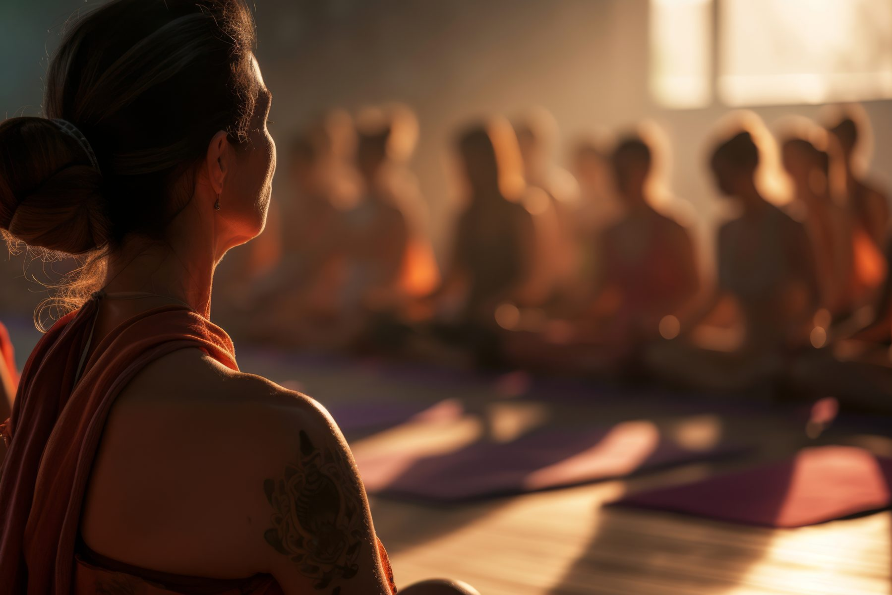

2.1M active users in three months,
with no login screen.
WHO and the Ministry of AYUSH needed one yoga app that worked for a 12-year-old on a low-bandwidth connection and a 65-year-old in a city apartment. I led UX from discovery through launch, under the WHO Traditional Medicine Strategy 2014–2023.
- Role
- Senior UX Designer, UX lead
- Team
- 6
- Timeline
- 3 months
- Platform
- iOS, Android
- Research
- 20 interviews, 5 workshops
- Problem
- WHO and the Ministry of AYUSH needed one yoga app for ages 12 to 65, on flagship phones and on 2G, across countries. Existing apps served only the paying, urban, English-speaking slice.
- Key decision
- No login screen and audio-first instruction, designed for the slowest connection in the room. Onboarding was reworked after it failed the first usability round.
- Outcomes
- 2.1M+active users in the first three months
- 2.1×the 1M install target WHO set
- 4.8/5App Store rating, SUS 83.5 in testing
Problem Statement
Yoga’s global audience isn’t one person. WHO needed a single app for a 12-year-old and a 65-year-old, on a flagship phone and on 2G, across countries with very different relationships to the practice.
Existing apps optimised for the easiest slice of that audience: paying, urban, English-speaking, already confident. The hard part wasn’t building a yoga app. It was building one that didn’t quietly exclude most of the world.
“I’m terrified of doing a pose wrong and hurting my knees or back. The video moves so fast, and I wish the instructor could actually see me.”
Business Goals
Business Objectives
My Role
I owned UX end to end, leading a team of six across discovery, design and launch.
Killed the login wall
Research showed forced registration blocked adoption. Stakeholders wanted accounts for analytics. I argued anonymous-first and won, trading user-level tracking for reach.
Made audio primary, not supplementary
Users couldn’t look at a screen mid-pose. This changed the content production brief, not just the UI.
Set a 20-minute ceiling on default sessions
Held against a content team that wanted to showcase longer classes. Under 20 minutes was where abandonment dropped.
A universally accessible UX for a global scale.
We needed to reach an incredibly broad demographic from 12 to 65 years old easily. The UI and user journeys had to be universally understood without high cognitive load, operating smoothly even in low-bandwidth regions.
The Process
A structured approach to ensure mindful execution.
Research Execution
I began the discovery phase with comprehensive secondary research, analyzing the current state of Yoga globally. To ensure our solution was grounded in real user needs, we split our primary research into two distinct streams: Qualitative and Quantitative.
User Interviews & Themes
We conducted structured 1-on-1 interviews with users to map their daily habits, expectations, and the biggest challenges they face in maintaining a consistent practice.
"I'm terrified of doing a pose wrong and hurting my knees or back. The video moves so fast, and I wish the instructor could actually see me."
Software Engineer, 35"It's hard to tell if I'm getting the alignment right just by watching a screen. I need that instant feedback you get from a live studio class, but without the cost."
Accountant, 40"I often skip poses I'm not sure about, which defeats the purpose of the flow."
Freelancer, 28"When all the models are thin and flexible, it makes me feel like the practice isn't for me. I need modifications explained by someone who understands joint pressure."
Recruiter, 30"I need a dedicated beginner track that doesn't feel rushed or intimidating. It needs to assume I know nothing."
Student, 22"I want to focus on my back today, but I also only have 12 minutes. None of the apps let me combine those two things easily."
Product Manager, 32"I don't mind paying, but when I download an app and the basic 'Beginner's Journey' is locked, I just delete it. I need to be able to start learning immediately."
Teacher, 45"Glo is great, but it's too expensive for me right now. I need something high-quality that respects my budget."
Consultant, 27Surveys & Analytics Data
To validate our interview findings at scale, we gathered quantitative data from broader demographics. This helped us measure feature prioritization and session length tolerances.
| Metric | Finding | Implication for Design |
|---|---|---|
| Mobile-First Dependency | 95% of users use their smartphone exclusively for fitness/wellness apps. | Mobile UI/UX must be the primary development focus. Web is secondary. |
| Time Constraint | 85% of users typically need classes under 30 minutes (with 40% requiring options under 15 minutes). | The app must offer extreme flexibility in class duration to fit demanding schedules. |
| Cost Sensitivity | 90% of users stated they would pay $10 or less per month for an app that solved their core problems. | The pricing model must be highly competitive and not rely on high-tier paywalls for core instruction. |
| Safety Concern | 75% of beginners expressed a moderate-to-high fear of injury, due to lack of real-time form correction. | Pointed to AI pose correction as the differentiator. Scoped beyond v1 on bandwidth and cost grounds, and documented for the roadmap. |
| Repetition Tolerance | Only 10% of users were satisfied with the content variability in their current yoga app (Glo/Alo users). | Pointed to dynamic flow generation. Also scoped beyond v1; the 20-minute ceiling and flow parameters shipped instead. |
Meaningful Insights
Short Sessions
Users preferred routines under 20 mins. Lengthy sessions caused high abandonment.
Guided Audio
Clear audio instructions were crucial so users didn't have to look at the screen mid-pose.
No Forced Reg
Immediate sign-ups blocked adoption. Allowing anonymous trial increased retention.
Offline Access
Given the global demographic, downloading sessions for offline use was a top request.
Key Success Factors
Inclusivity in Content
All content must prominently feature and narrate modifications for different body types and mobility levels, directly addressing concerns like plus-size accessibility and older demographics.
Intuitive Flow Generator
A system that allows users to quickly build a unique, non-repetitive class by setting 3–5 quick parameters: Duration, Style, Intensity, and Focus Areas.
Mobile App Benchmarking
| Features | Glo | GAIA Yoga | Headspace | Calm | Alo Moves | WHO mYoga |
|---|---|---|---|---|---|---|
| 100% Free & Ad-Free | – | – | – | – | – | |
| No Login Required | – | – | – | – | – | |
| Yoga & Asana Primary Focus | – | – | ||||
| Low Bandwidth / Audio-First | – | – | – | |||
| Offline Practice Mode | ||||||
| Content Library Depth | – | – | – | |||
| Studio-Grade Production Polish | – |
Glo and Alo Moves beat us on library depth and production polish, both funded by the subscriptions we deliberately did not have. We chose reach over richness.
Information Architecture &
Wireframing
Translating the insights into a cohesive structure required meticulous mapping. We created detailed user flows and wireframes to ensure every journey felt natural, minimizing cognitive load and prioritizing accessibility.
Information Architecture
.png)
User Flow Mapping
.png)


Wires to High-Fidelity Design
Whites, teals, and soft blues were selected to convey trust, calmness, and health. Moving from raw wireframes to polished UI mockups, the typography utilizes Inter for crisp legibility across all languages, minimizing cognitive load.


Usability Testing
To ensure the app met the strict cognitive load limits required for a global rollout, we ran extensive remote and in-person usability testing with users aged 12–65.
Onboarding failed the first round at 80% task success, the weakest result in the set. Participants aged 55+ couldn’t parse the thin iconography, and the intro carousel was being skipped before the “no registration needed” message landed. Two changes came out of it:
Contrast & Readability
Older participants struggled with thin iconography. We thickened stroke weights and boosted contrast for critical navigation elements to guarantee visibility from a distance.
Audio Cue Prominence
Users frequently had their device on the floor during practice. We shifted to an audio-first instruction model so users wouldn't have to crane their necks to read the screen.
| Task | Goal | Success Rate | Average Time on Task | Benchmark Goal |
|---|---|---|---|---|
| T1: Onboarding | User successfully registered. | 80% | 1 Minutes | <2 Minutes |
| T2: Learn Yoga | User successfully learned a 20-minute, Yin-style class focused on "Hips." | 88% | 20 Minutes | <25 Minutes |
| T3: Practice Yoga | User successfully Practiced a 20-minute, Yin-style class focused on "Hips." | 88% | 20 Minutes | <25 Minutes |
| System Usability Score (SUS) | Overall rating of the prototype's usability (1–100). | N/A | 83.5 | (Acceptable) |
Results in the first three months
The END
mYoga bridged the gap between a global health initiative and a daily practice people would actually keep. By removing the login, leading with audio and designing for the slowest connection in the room, it reached 2.1 million people in three months, twice the target it was given.
Inhale the future, exhale the past.
What this project changed in how I work
-
01
Constraints beat preferences
Designing for a 2G connection on a low-end Android forced offline-first decisions I would not have reached by taste. The bandwidth budget became the brief, and the interface got better for it.
-
02
Test in the language people practice in
Sessions run only in English hid comprehension failures in the pose instructions. Once we tested in regional languages, the icon set and the audio cue timing both had to change.
-
03
Two clients, one brief
WHO and the Ministry of AYUSH had different definitions of success. Getting a single written problem statement signed by both, before any design, saved the project weeks of rework later.